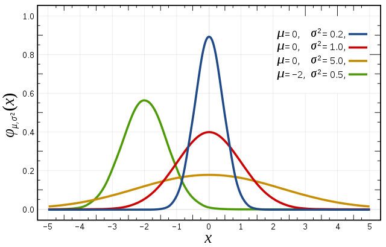
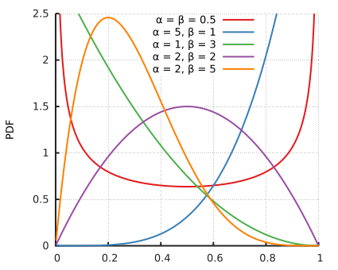

4 Session 3: Introduction to Bayesian modeling
4.1 Learning Objectives
In this lesson, you will learn:
Why Bayesian approaches are useful
Refresher on probability, distributions, and Bayes’ rule
Drafting models with directed acyclic graphs
4.2 Why choose Bayesian?
4.2.1 Philosophically sound and consistent
While the methods section of a Bayesian paper can seem complex and opaque, the underlying principles of Bayesian thinking are more intuitive than for frequentist tests. Kruschke (2015) breaks Bayesian data analysis down into two foundational principles:
Using data to reallocate credibility among possibilities
The possibilities are parameter values in meaningful mathematical models
Suppose we step outside and notice that a cultivated plant is yellowing and losing its leaves. We can consider the many possible causes, such as under watering or over watering, among others. Each possibility has some prior credibility based on previous knowledge. For example, where I live in the Sonoran desert, drought or under watering has a greater probability of causing mortality than over watering. As we continue to walk around the garden, we collect new observations. If the other individuals of the same species are green and thriving, we might decrease the probability of under watering, which would probably affect all individuals similarly, and increase the probability of over watering (e.g., leaking pipe). Therefore, Bayesian inference closely mimics deductive reasoning in its reallocation of credibility across possibilities.
In real life, data are noisy and inferences are probabilistic. For example, consider testing for COVID in a population where the test is not perfect and can produce both false positive and false negatives. But, we must take into account the prevalence of COVID in population. In areas with high disease prevalence, the false positive rate is lower than in areas with low prevalence. Therefore, the true outcome (positive or negative for COVID) depends on previous knowledge of COVID prevalence and the noisy data (imperfect COVID test). We use Bayesian inference to reallocate credibility across the possibilities.
The second foundational principle calls us to define and therefore constrain the set of possibilities. We begin by describing the data from a family of candidate distributions, which are mathematical formulas that can characterize the trends and spreads in data. Each of these distributions is defined by one or more parameter values, which determine the exact shape of the distribution.

In Bayesian inference, model parameters are the possibilities over which credibility is allocated. For example, the above histograms show a roughly unimodal and symmetric distribution. The red and blue lines represent candidate descriptions of the data, normal distributions with different sets of parameter values (\(\mu, \sigma\)). Both choices are plausible, but given the data, the red line has greater credence. Bayesian inference uses the prior probabilities and the data to compute the exact credibility of parameter values.
4.2.2 Flexible
Bayesian modeling allows practitioners to design models to fit the data they have, rather than transforming data in an attempt to satisfy model assumptions. This flexibility extends to accounting for hierarchy, treating data as drawn from any kind of distribution, and defining meaningful parameters.
For an example of hierarchy, consider a trait collected across multiple individuals and nested within taxonomic levels. We might be interested in comparisons across species, genera, and families. A hierarchical means model might specify:
\(trait_i \sim Normal(\mu_{sp(i)}, \sigma^2)\)
\(\mu_{sp} \sim Normal(\mu_{g(sp)}, \sigma^2_{g})\)
\(\mu_{g} \sim Normal(\mu_{f(g)}, \sigma^2_{f})\)
where sp represents species, g represents genus, and f represents families. The notation indicates that each observation i belongs to a species, each species belongs to a genus, and each genus belongs to a family. Thus, in a single model, the hierarchical relationship between species, genus, and family can be represented.
Data can also be treated as arising from any distribution. For example, a inventory survey might yield counts of a particular species, but those counts might be clumped on the landscape, yielding large number of zero observations. A Poisson distribution describes the probability of a given number of events occurring in an interval of time or space, but doesn’t accommodate the extra zeros. In Bayesian modeling, it is straightforward to specify the surveyed counts as a mixture between Bernoulli and Poisson distributions, which accounts for the separate processes of dispersal (species arrives or not in plot) and frequency (if species arrives, the rate or density of arrival).
Finally, Bayesian inference can accommodate a wide range of model and data possibilities, rather than having separate tools or approaches for different types of data or tests. T-test, ANOVA, linear model, non-linear models, and more can be specified in the same framework, using the same set of tools, and can even be combined. This allows the implementation of mathematical models with scientifically meaningful parameters, possibly in conjunction with an ANOVA or regression framework. For example, we might have leaf-level gas exchange data and want to fit a biochemical model of photosynthesis, but the scientific question is whether photosynthetic parameters differed between species and treatments. The flexible nature of a hierarchical approach means that the meaningful parameters (e.g., \(V_{cmax}\)) can be represented by a linear model. We can use the data to make inference about the meaningful parameters in one step.
4.2.3 Clear inference
In frequentist paradigms, confidence intervals and p-values have very specific, non-intuitive definitions. A 95% confidence interval indicates that out of 100 replications of the experiment, 95% of the resulting confidence intervals will include the true parameter value. In contrast, Bayesian inference results in parameters themselves having distributions, and conditioned on a particular dataset, the 95% credible interval includes 95% of the probability of the parameter value. Bayesian credible intervals and p-values are simple to define, calculate, and interpret.
A corollary to the direct quantification of uncertainty is that the purpose of the analysis can be on estimation of parameters, rather than strict hypothesis testing. Bayesian inference provides a way to quantitatively describe relationships in complex datasets, which allows for inquiry to be driven by questions and models of understanding, rather than falsifiable hypotheses.
4.2.4 Uses all available information
Bayesian modeling allows for simultaneous analysis of multiple-related datasets. For example, a response variable and its measurement error can be incorporated into a single analysis. Partially missing data do not have to be excluded, and in fact the missing values can be imputed by the model in the same step as the analysis. Finally, prior knowledge can be included in the form of informative priors. In practice, many Bayesian practitioners use relatively non-informative priors, but knowledge of the acceptable values a parameter can take can be incorporated as informative priors, which can improve model speed and convergence.
Brainstorming: Possible applications of Bayesian modeling
Have you encountered any research roadblocks, past or present, that could potentially be addressed with the techniques mentioned above?
4.3 Review of probability, Bayes’ rule, and distributions
4.3.1 Probabability

We define the marginal probability as the total area of circles A and B. \(P(A) = {A_A}\)
\(P(B) = {A_B}\)
The joint probability is the shared area of circles A and B.
\(P(A,B) = A_{AB}\)
The conditional probability describes the the shared area scaled by the whole area of one circle.
\(P(B|A) = \frac{A_{AB}}{A_A}\)
\(P(B|A) = \frac{P(A,B)}{P(A)}\)
The joint probability can be rearranged algebraically to produce:
\(P(A,B) = P(B|A)P(A)\)
Thus, we can describe the joint probability as a product of a conditional and marginal probabilities.
Interactive problem: Conditional probability
Conditional probability rules are very useful for breaking down complex problems. What are some possible ways to break down \(P(A, B, C)\)?
4.3.2 Bayes’ rule
Bayes’ rule can be derived by describing the joint probability in two ways.
\(P(A,B) = P(B|A)P(A)\)
\(P(A,B) = P(A|B)P(B)\)
By setting these two descriptions equal to each other and rearranging algebraically, we obtain:
\(P(A|B) = \frac{P(B|A)P(A)}{P(B)}\)
Thus, we can obtain the conditional probability of \(A|B\) from the conditional probability of \(B|A\), plus the marginal probabilities of A and B.
Interactive problem: Applying Bayes’ rule
On a hike, we observe a dead tree and wonder, what is the probability the tree was attacked by beetles, given that it is dead? There are two random variables of interest, beetle and death, each of which can take on the values 1 or 0. We are interested in \(P(beetle = 1 | death = 1)\). Recent data show the following probabilities:
| Condition | Probability |
|---|---|
| \(P(beetle = 0)\) | 0.7 |
| \(P(beetle = 1)\) | 0.3 |
| \(P(death = 0|beetle = 0)\) | 0.8 |
| \(P(death = 0|beetle = 1)\) | 0.1 |
| \(P(death = 1|beetle = 0)\) | 0.2 |
| \(P(death = 1|beetle = 1)\) | 0.9 |
What is \(P(beetle = 1 | death = 1)\)?
4.3.3 Bayesian inference
In Bayesian inference, we can use the inversion of probability from Bayes’ rule to understand the conditional probability of the parameters given the data from the conditional probability of the data. Here, we use \(y\) to represent data and \(\theta\) to represent parameters:
\(P(\theta|y) = \frac{P(y|\theta)P(\theta)}{P(y)}\)
To simplify further, we can remove the marginal probability of \(y\), which is the normalizing constant in the denominator. The unnormalized posterior distribution can be described as:
\(P(\theta|y) \propto {P(y|\theta)P(\theta)}\)
We read this as ‘the posterior is proportional to the likelihood times the prior’.
In Bayesian inference, we can learn about the posterior parameter distribution given the observed data. In so doing, we specify the data as stochastically drawn from a probability distribution conditioned on the ‘true’ parameter values and define the prior probability of those parameters.
4.3.4 Quick review of distributions
We identified above that to derive the posterior parameter probabilities, we need to specify both the likelihood and the prior. To do so, we should be aware of a handful of probability distributions that mathematically describe a sample space, or possible outcomes of a random variable.
| Continuous | Description | Discrete | Description |
|---|---|---|---|
| Normal  | Domain: \((-\infty, \infty)\) Parameters: \(\mu\) and \(\sigma\) Example: Net ecosystem exchange |
Poisson  |
Domain: 0 to \(\infty\) Parameter: \(\lambda\) Example: Count data |
Gamma  |
Domain: \((0, \infty)\) Parameters: \(\alpha\) and \(\beta\) Example: Rates |
Bernoulli | Domain: 0 or 1 Parameter: \(p\) Example: Presence or absence |
| Beta  | Domain: \((0, 1)\) Parameters: \(\alpha\) and \(\beta\) Example: Survival probability |
Binomial | Domain: 0 to \(\infty\) Parameters: \(n, p\) Example: Deaths in a population |
Once we are aware of the general features of distributions, we can select an appropriate likelihood for the data. The likelihood should match the data and the data-generating process.
A few questions to consider are:
Are the data (response variables) continuous or discrete?
What are the range of possible values that the data can take?
How does the variance of the data change as a function of the mean?
Interactive problem: Identifying potential likelihoods
For each example, identify the potential probability distribution(s) that would be appropriate. Use the questions above to guide your choices.
- Number of trees classified as dead in a forest plot
- Total leaf area of a tree
- Reproductive status of an individual (reproductive vs. non-reproductive)
- Proportion of trees classified as dead in a forest plot
- Seed mass
- Number of sea stars in a tide pool
- Concentration of oxygen in seawater
- Time between flood events
4.3.5 Selecting priors
Selecting a likelihood to describe the data distribution is necessary but not sufficient for specifying a Bayesian model. Careful thought must be put in to picking priors as well, which represent existing knowledge about a parameter.
A few questions to consider are:
What range can the parameter take mathematically?
What values are ecologically realistic?
Is there an appropriate conjugate prior for this likelihood?
Conjugacy has a formal definition, but for our purposes, natural conjugate prior families have practical advantages for computation and interpretation.
Some examples include the binomial-beta, Poisson-gamma, multinomial-Dirichlet, and exponential-gamma. For a normal likelihood, the conjugate prior for \(\mu\) is normal and the conjugate prior for \(\sigma^2\) is the inverse-gamma. In common Bayesian simulation software such as JAGS, OpenBUGS, and Stan, the scale parameter of a normal likelihood is defined as the precision (\(\tau = \frac{1}{\sigma^2}\)); the conjugate prior for \(\tau\) is a gamma distribution.
Selecting priors is an important consideration of Bayesian modeling that will have its own lecture later in the week. For now, we can say that many parameters do not need informative priors in order to be reliably estimated by the data (e.g., regression parameters). Other parameters, such as observation error, will rarely be identifiable without strong prior information (or additional data).
In practice, selecting priors can be part of the model development process. Different priors can be tested for their contribution to the posterior, which allows for evaluation of the sensitivity of the posterior to the prior specification. Particularly for non-identifiable parameters, convergence can be achieved more quickly with a more informative prior. One method can be to specify a uniform prior with realistic but conservative upper and lower bounds:
\(\theta \sim Uniform(A, B)\)
As such, the posterior distribution for \(\theta\) will also be restricted to the interval [A,B], and the data likelihood will contribute to its shape.
4.4 Drafting Bayesian models
Given the flexibility of Bayesian modeling and the considerations of selecting likelihoods and priors, a key step in model development is to write out the model components after considering the features of the scientific question and dataset at hand. The model can be be represented a series of equations, as a diagram, and in code. Ultimately, the manuscript will require the equations in the Methods section and the code as part of the publishing requirement. Diagrams are useful tool to visually represent the model and consider alternative model formulations.
4.4.1 Graphical representations of hierarchical models
Complex or hierarchical models can be easily represented as a graphical model, particularly a Directed Acyclic Graph (DAG). General convention for DAGs in Bayesian modeling are:
- Nodes can be stochastic (circles) or deterministic/fixed (squares)
- Child nodes depend on parent nodes
- A root node does not have any parents
- A terminal node does not have any children
- An internal node gives rise to children nodes and has parent node(s)
- Edges are directional (arrows) that indicate the direction of the conditional relationship between two nodes
- Edges must be unidirectional (node A cannot be parent to and child of node B)
- No sequence of edges returns to the parent node
In this DAG, A is a root node, C is a terminal node, and B is an internal node. The conditional probability model can be defined as:
\(P(A, B, C) = P(C|B)P(B|A)P(A)\)
We will see in the example below that DAGs can be especially useful for visualizing the mathematical representation of models.
4.5 Simple hierachical example: snow fences
Consider a study to quantify the effects of snow fences on invasive plant establishment. 10 snow fences are monitored and their invasive plants counted within the “footprint” of each snow fence.
- Let \(y_i\) represent the number of invasive plants associated with snow fence \(i\).
- Let \(x_i\) represent the footprint (in square meters) of snow fence \(i\)
The data are:
| \(i\) | \(y_i\) | \(x_i\) |
|---|---|---|
| 1 | 138 | 72 |
| 2 | 91 | 50 |
| 3 | 132 | 55 |
| 4 | 123 | 60 |
| 5 | 173 | 78 |
| 6 | 124 | 63 |
| 7 | 109 | 54 |
| 8 | 154 | 70 |
| 9 | 138 | 80 |
| 10 | 134 | 68 |
Given these count data, let’s define the likelihood with a Poisson distribution. However, we have reason to believe that each snow fence has its own rate of invasive plants due to local topographical factors. Therefore, we specify the likelihood as:
\(y_i \sim Poisson(\theta_i \cdot x_i)\)
such that each snow fence \(i\) has its own rate parameter, \(\theta_i\). However, given that the snow fences are located at the same field site, we believe that the individual rates of invasive plants are drawn from an overall regional rate:
\(\theta_i \sim Gamma(\alpha, \beta)\)
In this hierarchical model, the prior for the parameter of interest is a gamma distribution described by \(\alpha\) and \(\beta\), which are unknown/stochastic. So, we must define these hyperparameters with their own priors.
\(\alpha \sim Gamma(2, 1)\)
\(\beta \sim Exponential(1)\)
The hyperparameters \(\alpha\) and \(\beta\) are root nodes, whose distributions are fixed rather than stochastic.
The levels of this hierarchical model can be visualized by the following DAG:
The bolded variables indicate vectors, which are indexed by \(i\) in statistical notation. The rectangle around \(\bf{x}\) indicates that it is a deterministic node, or fixed as data. Notably,the oval around the response variable \(\bf{y}\) indicates that it is a stochastic node; that is, drawn from a distribution and given the Poisson likelihood. \(\bf{\theta}\) is the parameter in the Poisson likelihood, and it is drawn from a conjugate gamma prior with two parameters, \(\alpha\) and \(\beta\).
All of the stochastic nodes (ovals) are drawn from distributions. \(\alpha\) and \(\beta\) are root nodes, meaning that the parameter values for their distributions are fixed and must be defined numerically.
Interactive problem: Logistic regression example
Consider the case of selection pressure from discoloring of tree trunks from air pollution. One species of moth rests on tree trunks during the day, and their coloration acts as camouflage against bird predation. Researchers established a gradient of tree trunk color from Liverpool the countryside and selected 7 sites. At each site, they glued an equal number of dead light and dead dark moths to tree trunks and counted the number of removed moths after 24 hours.
The dataset includes Site (1,2, … 7), Morph (1 = light, 2 = dark), Distance (from Liverpool, km) Placed (number of moths glued to trunks), and Removed (number of moths removed from trunks after 24 hours).
| \(Site\) | \(Morph\) | \(Distance\) | \(Placed\) | \(Removed\) |
|---|---|---|---|---|
| 1 | 1 | 0 | 56 | 17 |
| 1 | 2 | 0 | 56 | 14 |
| 2 | 1 | 7.2 | 80 | 28 |
| 2 | 2 | 7.2 | 80 | 20 |
| 3 | 1 | 24.1 | 52 | 18 |
| 3 | 2 | 24.1 | 52 | 22 |
| 4 | 1 | 30.2 | 60 | 9 |
| 4 | 2 | 30.2 | 60 | 16 |
| 5 | 1 | 36.4 | 60 | 16 |
| 5 | 2 | 36.4 | 60 | 23 |
| 6 | 1 | 41.5 | 84 | 20 |
| 6 | 2 | 41.5 | 84 | 40 |
| 7 | 1 | 51.2 | 92 | 24 |
| 7 | 2 | 51.2 | 92 | 39 |
Here, our goal is to evaluate whether the probability of removal differed between the light and dark morphs, and whether this difference depends on distance from Liverpool.
Consider the following:
Let \(y\) represent the number of removed moths and \(n\) represent the number of moths placed. Write out the likelihood for this response variable.
The probability \(p\) of removal differs depending on distance from Liverpool, \(x\). Thus, we should index the variables as \(p_i\) and \(x_i\), to indicate that each observation will be associated with a unique probability. Let \(\beta_1\) and \(\beta_2\) as the intercept and slope of a linear regression. Write out the expression relating \(p_i\) as linear function of \(x_i\).
Furthermore, we hypothesize that color morph influences the relationship with distance. Let \(\beta_1\) and \(\beta_2\) each be vectors. How can the linear function be updated to account for the morph of observation \(i\)?
Regressions work best on the whole real line, but probability \(p\) can only take on values between \([0,1]\). What kind of link function can be used to relate \([0,1]\) to the whole real line?
Priors are needed for the regression parameters. In the absence of prior information, what might be a relatively non-informative prior to give \(\beta_1\) and \(\beta_2\)?
Draw a DAG for this model.
4.5.1 Acknowledgements
These materials are derived primarily from Bayesian course materials developed and taught by Kiona Ogle. Additional ideas and code have been adapted from materials authored by Kelly Heilman, Robert Shriver, and Drew Peltier. The texts ‘Doing Bayesian Data Analyis’ (Kruschke 2015), ‘Statistical Rethinking’ (McElreath 2016), and ‘Bayesian Data Analysis’ (Gelman et al. 2014) were strongly influential and recommended references.